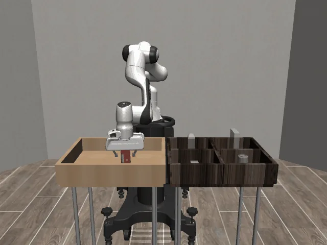

Robot control simulationRobot arm / ACT
An implementation and explanation of the policy behind action chunking for robot control.
Projects & writing
I’m Alex. I explore robotics, machine learning, and the math behind visual computing through code and experiments.
01 / Selected work
Things I’ve built and explored, with notes on how they work.

Robot control simulationAn implementation and explanation of the policy behind action chunking for robot control.

A small experiment that rebuilds an image with fewer singular values, with a live rank slider in the app.
02 / The details
Project READMEs, set up for a more comfortable read.
Curious about the implementation?
See all my work on GitHub